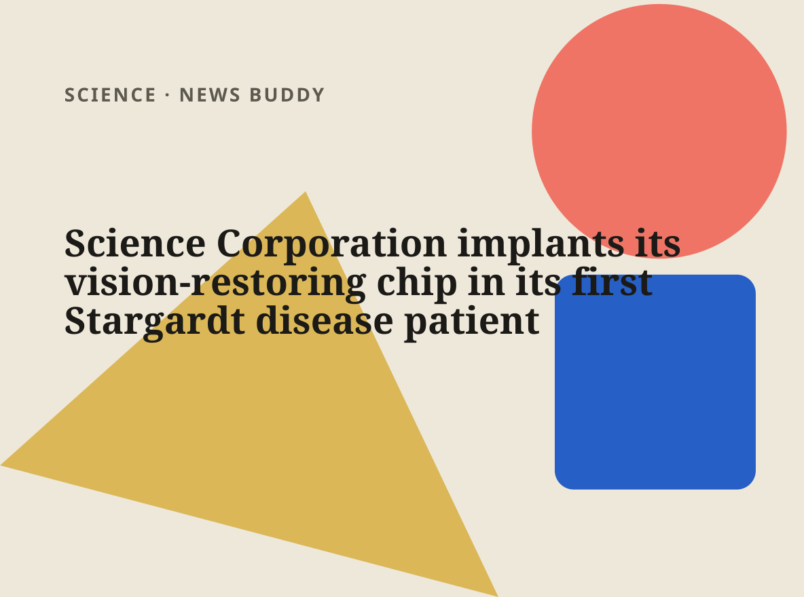

Science Corporation has successfully implanted its PRIMA vision-restoring chip into its first patient suffering from Stargardt disease, an inherited condition that causes central vision loss. The small chip, acting as artificial photoreceptors, is placed in the eye and works in conjunction with camera-equipped glasses to transmit visual signals to the optic nerve. This development offers a potential treatment for Stargardt disease, currently considered incurable, and expands the application of brain-computer interfaces beyond controlling computers to address a range of medical conditions.